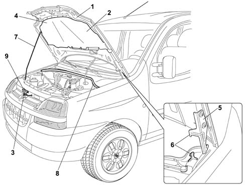

Introduction - COMPARTMENT LIDS
- Path
- Descriptions > 70 FITTINGS > 7025 COMPARTMENT COVERS > Introduction - COMPARTMENT LIDS
- Kind
- system description
- Applies to
- all engines; all production periods
- Interactive page
- https://sloeber94.github.io/elrnDB-fDbl/en/#/2585425
Applies to: all engines; all production periods
The bonnet lid has been manufactured to include various safety features; These include preset collapse lines that - together with special retaining devices - prevent the bonnet going through the windscreen in the case of impact.
The bonnet is lined throughout with a preformed panel in sound-absorbent material. This reduces noise emissions to the outside of the car and also to the car interior to increase passenger comfort.
The preformed panel is secured by a sufficient number of studs to ensure effective fastening to the bonnet frame.
Applies to: all engines; all production periods
Bonnet lid (1) is supported by two hinges (5) that incorporate a hook (6) to secure the bonnet in case of a collision; this hook is made directly out of the mobile part of the hinge.
The bonnet is closed by means of a single central catch assembly (3) controlled by bowden cable. The catch assembly incorporates a safety hook (9).
The inner part of the lid is fitted with two wind seals, one at the front (4) and one at the rear (8).
The bonnet interior can also be fitted with a sound-proof lining (2) depending on the version.

1, Bonnet lid 2, Bonnet lid soundproof lining 3, Bonnet lid catch 4, Bonnet lid front wind seal 5, Bonnet lid hinges 6, Safety hook 7, Bonnet lid support rod 8, Bonnet lid rear wind seal 9, Safety hook